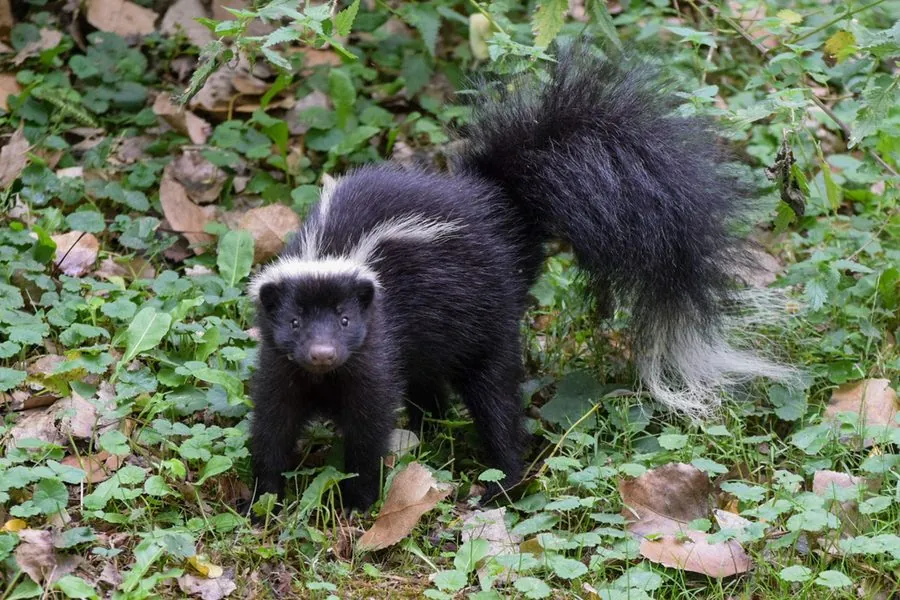

哺乳动物 · 动物界
臭鼬 Mephitis mephitis

北美洲标志性的黑白花食肉动物，遇敌时抬起尾巴喷射恶臭液体，警示色与喷臭的能力让它少有天敌。
- 分类
- 门脊索动物门纲哺乳纲目食肉目科臭鼬科属臭鼬属
- 栖息环境
- 森林、草原、农田与城市边缘，偏好有洞穴和落叶层的环境
- 地理分布
- 北美洲，从加拿大南部经美国到墨西哥北部，并被引入部分地区
- 保护级别
- IUCN 无危（LC）
物种志
臭鼬体长 0.33–0.45 米，尾长 0.17–0.32 米，体重 1.2–5.3 kg，雄性大于雌性。它的被毛为黑色，头顶、颈背和背部有两条宽大的白色纵纹，尾巴蓬松、毛基白而毛尖黑；身体粗壮，四肢短小，前爪长而强壮，适合挖掘。
臭鼬分布于北美洲，从加拿大南部到美国、墨西哥北部，栖息于森林、草原、农田和城市边缘，适应力强。它是杂食动物，食物包括昆虫、鼠类、鸟类、蛙、果实和人类垃圾，常翻找腐木和落叶层寻找昆虫。臭鼬多在黄昏和夜间活动，白天在洞穴中休息；遇敌时会先竖起尾巴、跺脚警告，再从肛门腺喷出可及 2–3 米远的恶臭液体，气味持久难除。雌兽妊娠期约 62–66 天，每胎 2–10 仔。因其警示色和喷臭能力，臭鼬天敌不多，种群稳定。
形态与习性
- 食性昆虫、鼠类、鸟类、蛙、果实与人类垃圾
- 体长0.33–0.45 m，尾长 0.17–0.32 m
- 体重1.2–5.3 kg，雄性大于雌性
- 寿命野外约 3–7 年
- 繁殖妊娠期约 62–66 天，每胎 2–10 仔
- 防御肛门腺可喷出 2–3 m 远的恶臭液体
- 活动节律黄昏和夜间活动
趣味知识
- 臭鼬喷出的臭液可及 2–3 米远，气味能残留数天。
- 喷臭前它会先竖起尾巴、跺脚，向对手发出警告。
- 黑白分明的毛色是典型的警示色，提醒天敌不要靠近。
- 臭鼬会利用其他动物的废弃洞穴作为巢穴。